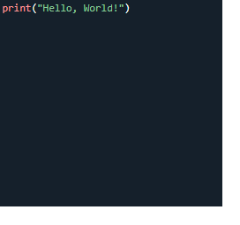

Python can be used on a server to create web applications.

What is Python?
Python is a popular programming language. It was created by Guido van Rossum, and released in 1991.
It is used for:
web development (server-side)
,
software development,
mathematics,
system scripting.
What can Python do?
Python can be used on a server to create web applications.
Python can be used alongside software to create workflows.
Python can connect to database systems. It can also read and modify files
.
Python can be used to handle big data and perform complex mathematics.
Python can be used for rapid prototyping, or for production-ready software development.
Why Python?
Python works on different platforms (Windows, Mac, Linux, Raspberry Pi, etc).
Python has a simple syntax similar to the English language.
Python has syntax that allows developers to write programs with fewer lines than some other programming languages.
Python runs on an interpreter system, meaning that code can be executed as soon as it is written. This means that prototyping can be very quick.
Python can be treated in a procedural way, an object-oriented way or a functional way.
Good to know
The most recent major version of Python is Python 3, which we shall be using in this tutorial. However, Python 2, although not being updated with anything other than security updates, is still quite popular.
In this tutorial Python will be written in a text editor. It is possible to write Python in an Integrated Development Environment, such as Thonny, Pycharm, Netbeans or Eclipse which are particularly useful when managing larger collections of Python files.
Python Syntax compared to other programming languages
Python was designed for readability, and has some similarities to the English language with influence from mathematics.
Python uses new lines to complete a command, as opposed to other programming languages which often use semicolons or parentheses.
Python relies on indentation, using whitespace, to define scope; such as the scope of loops, functions and classes. Other programming languages often use curly-brackets for this purpose.
Python Install
Many PCs and Macs will have python already installed.
To check if you have python installed on a Windows PC, search in the start bar for Python or run the following on the Command Line (cmd.exe):
C:\Users\Your Name>python --version
To check if you have python installed on a Linux or Mac, then on linux open the command line or on Mac open the Terminal and type
:
python --version
If you find that you do not have Python installed on your computer, then you can download it for free from the following website: https://www.python.org/
Python Quickstart
Python is an interpreted programming language, this means that as a developer you write Python (.py) files in a text editor and then put those files into the python interpreter to be executed.
The way to run a python file is like this on the command line: